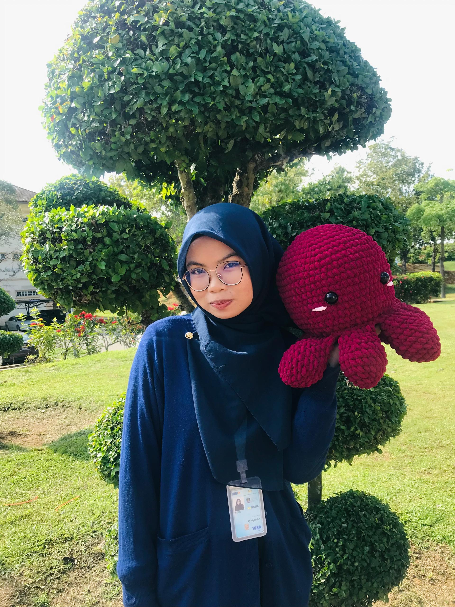
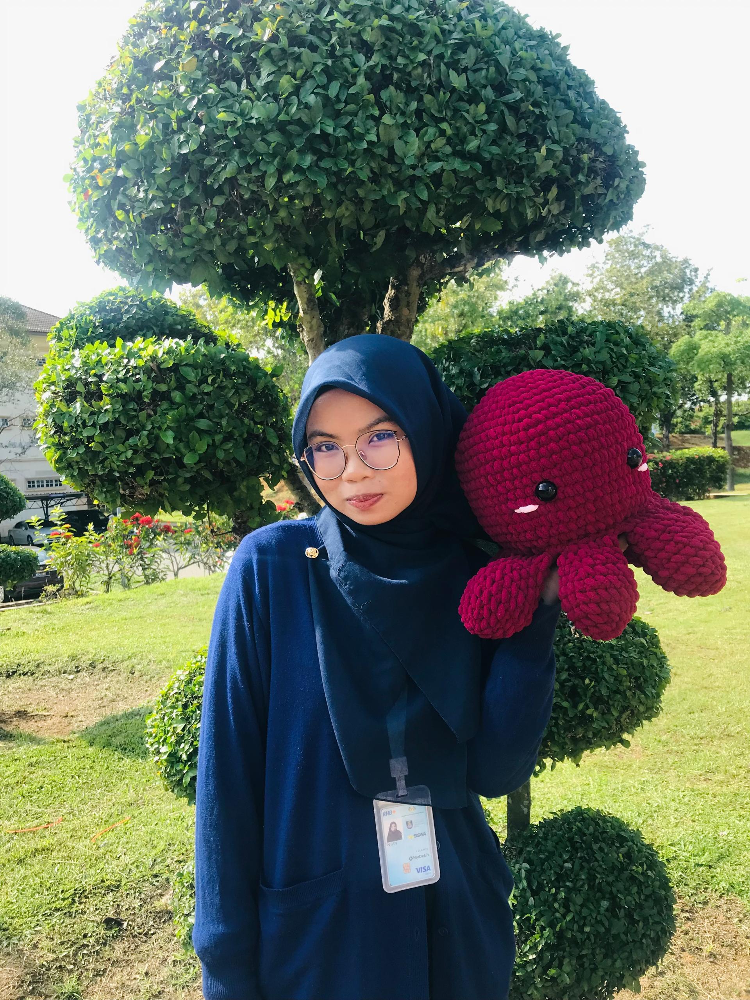

Why I Started My Business, TunnitalesCrochet: A Tale of Yarn, Dreams, and a Sprinkle of Magic
Hello, and welcome to the story behind TunnitalesCrochet! If you're here, chances are you’re curious about how this small but mighty crochet business came to life. Sit back, grab your favorite cup of tea (or coffee, no judgment!), and let me unravel the tale of how it all started.
From Hobby to Business
What started as a relaxing hobby quickly turned into something much bigger. I began gifting handmade pieces to friends and family, and their reactions were priceless. “You MADE this?!” they’d exclaim, holding a tiny crochet dinosaur or a cozy beanie. Their joy made me think, “Why not spread this happiness to others?” That’s when TunnitalesCrochet was born.
The name Tunnitales reflects my love for storytelling. Each crochet piece I create carries its own little tale—whether it’s a plushie dinosaur destined to become a child’s favorite toy, or a cozy scarf that wraps someone in warmth on a chilly day. Every stitch is a love letter to creativity and comfort.
 

Why Crochet?
Crochet, to me, is more than just a craft. It’s a form of self-expression and therapy wrapped into one. On days when life feels chaotic, sitting down with yarn and a hook helps me center myself. It’s my way of turning chaos into something beautiful—and now, I get to share that beauty with you..
What Keeps Me Going?
Running TunnitalesCrochet isn’t always easy. Balancing designs, orders, and marketing can be overwhelming, but the joy it brings to people makes it all worthwhile. Every time someone sends me a picture of their new plushie sitting proudly on their shelf or their baby snuggled in a handmade blanket, it reminds me why I started.